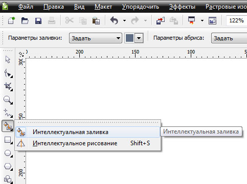

Определение объектов по контурам
Pentix / 26.07.2013, 17:37
Форум:
Добрый день!
Есть набор пересекающихся фигур и линий (на рисунке слева).
Надо получить все возможные замкнутые непересекающиеся фигуры (закрашенные справа).
Подскажите, пожалуйста, есть ли способ сделать как-то автоматически? Или, по крайней мере, малым количеством телодвижений
С уважением,
Алексей
Smart Fill тебе в помощь. Для автоматизации надо писать макрос, который бы проверял все объекты на пересечение.
Дак как-раз для малого количества телодвижений и если сложность примерно как на рисунке проще потыкать смарт филом
Воспользуйся Интеллектуальной заливкой.
Создадутся контуры поверх твоих.
Удерживая Shift выделишь их, сдвинешь и перекрасишь. А исходник удалишь.
